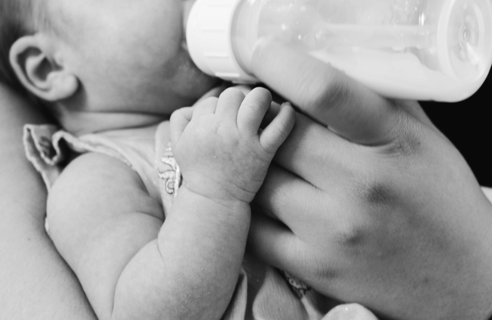

La alimentacion influye en el desarrollo de los niños de muchas
maneras. Una Alimentacion saludable proporciona al niño de los nutrientes
que necesita para crecer y desarrollo del cerebro, la funcion
muscular, el sistema inmune y la salud general.

Una alimentacion saludable es esencial para el desarrollo saludable de
los niños. Los padres pueden ayudar a sus hijos a comer sano
proporcionando una variedad de alimentos saludables, estableciendo un
buen ejemplo y haciendo que la hora de comer sea agradable.
